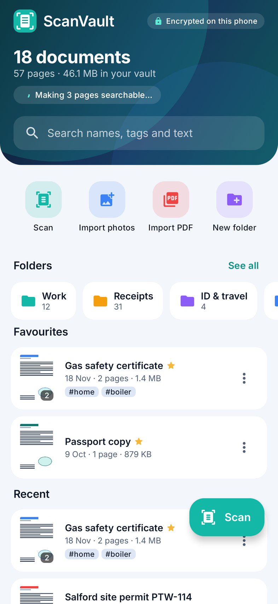
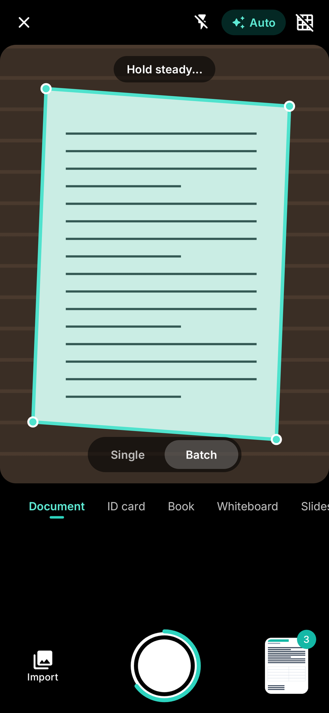
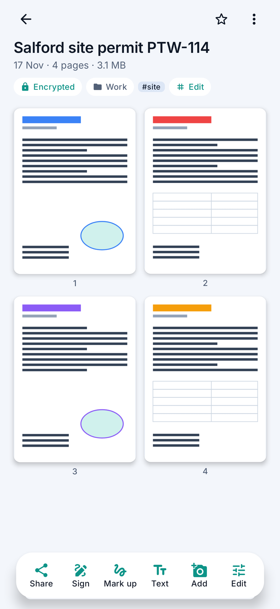
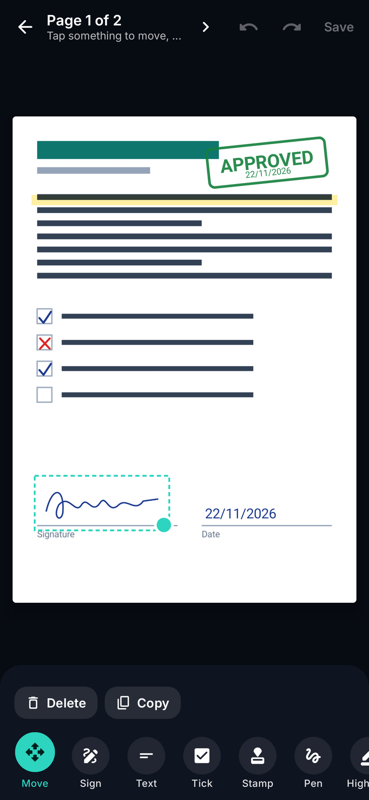
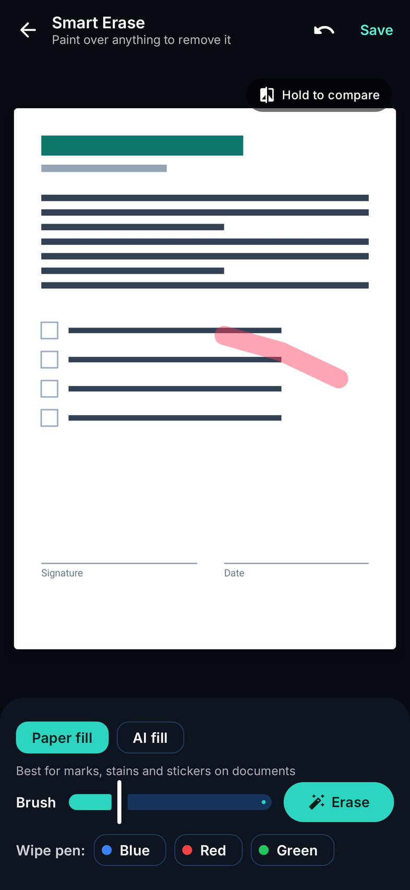
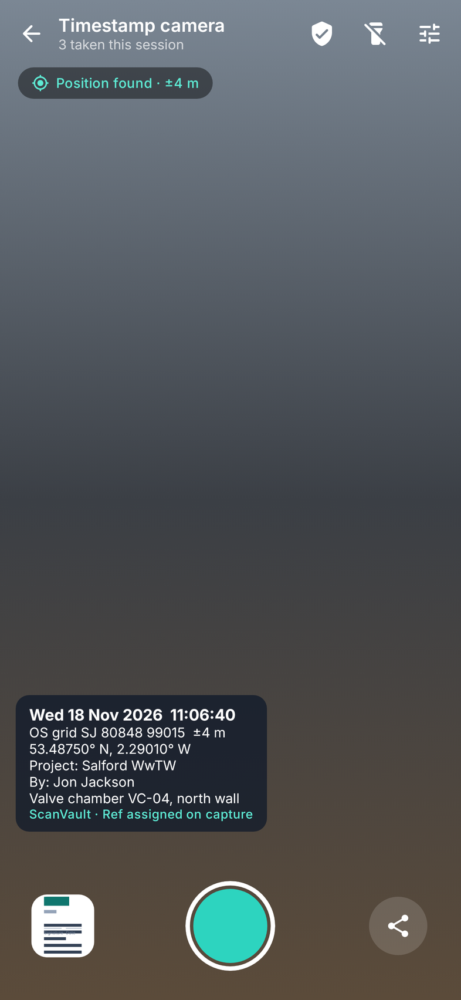
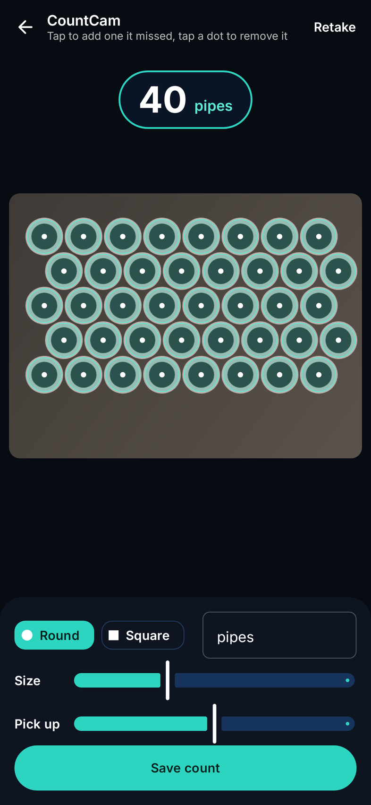
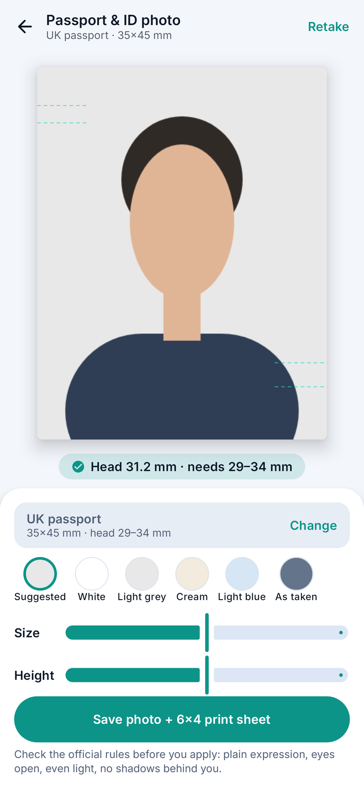

Scan it. Sign it. Keep it to yourself.
ScanVault turns your phone into a document scanner that finds the page, flattens it and cleans it up, then reads the words so you can search, copy and translate them. Sign and fill in forms, black out private details for good, wipe away marks, and share tidy PDFs.
It is free, with no adverts and nothing to unlock. There is no account and no cloud: every page is encrypted on your phone, and nothing is sent to the developer.
Download for AndroidHow to install
- Version 1.0
- Android 10 or later, 64-bit
- 66.3 MB
Free, with nothing to unlock. No adverts, no account with the developer, no tracking. Compare or read the release notes.
Chrome may say the file might be harmful. It shows this for app files that do not come from Google Play. Choose Download anyway.

- No subscriptionEvery tool is in the free app.
- No advertsNone in the app and none on this site.
- EncryptedEvery page and the database, with AES-256.
- No cloudYour scans never leave the phone unless you share them.
A look inside
These are the real screens, drawn from the app's own code with made-up documents. Swipe or scroll sideways to see them all.







How it works
No sign-up and nothing to set up. Open the app and tap Scan.
Point and hold
ScanVault outlines the page in teal and takes the photo once it is still. Keep going for more pages, or drag the corners if you want a tighter crop.
Pick a look
Magic, Enhance, No shadow, Black and white, Whiteboard and more, with a strength slider. Every page is read in the background so it becomes searchable.
Sign, share or keep
Sign it, black out what's private, then share a PDF or pictures. Or just keep it: everything is encrypted on your phone.
Everything is in, and all of it is free
Nothing below is held back for a paid tier, because there is no paid tier.
Scanning
- Finds the page by itself
- Automatic edge finding and auto-capture when the page is still, batch scanning that waits for the next page, and a magnifier for exact corners.
- Six camera modes
- Document, ID card (front and back on one A4 page at real size), Book (two pages from one photo, split at the spine), Whiteboard, Slides and QR codes.
- Clean, readable pages
- Eight looks including shadow removal and black and white, at up to 300 dpi for A4. Import photos and PDFs too.
Text and search
- Reads every page on the phone
- Search finds words inside your scans. Copy or share the text, page by page.
- Translate offline
- Language packs download once, with your OK, then translation works with no signal.
- Searchable PDFs
- Shared PDFs carry a hidden text layer, so they can be searched and copied anywhere.
Sign and edit
- Sign and fill in
- Draw, type or photograph your signature. Add text, ticks, crosses, dates and twelve rubber stamps, or your own.
- Black out for good
- Drag over private details, or find every place a name or number appears. Saving burns it in and replaces the original photo.
- Smart Erase
- Paper fill for marks and stains, an AI fill that runs on the phone for photos, and one-tap removal of blue, red or green pen.
Camera tools
- Timestamp photos
- Date and time, OS grid reference or latitude and longitude, project, name, notes and your logo on every photo, each with a reference and a fingerprint.
- Check a photo
- Tells you whether a shared timestamp photo is exactly the one that was taken, or looks up its original record.
- CountCam
- Counts round or square ends in a photo: pipes, bars, timber, blocks. Saves the photo with numbered dots and the total.
- Passport and ID photos
- 45 official sizes, the head sized to the rules, background swap and a 6×4 inch print sheet.
Sharing
- PDF, JPG, PNG or one long image
- With page size, four levels of compression, page numbers and a watermark.
- Password-protected PDFs
- AES-256 encryption that any PDF reader opens with the password.
- Clean copies
- Shared files are made fresh, with no location, phone model or time inside them. Print straight from the app.
Private by design
- Encrypted on your phone
- Every page and the database, with AES-256. The key is held by the phone's secure hardware.
- App lock and ID Vault
- Fingerprint, face or PIN, off until you switch them on. The ID Vault hides passports and cards from every list and search.
- Backup you control
- One file, sealed with your password, to keep wherever you like and restore on a new phone.
Your documents are your business
Encrypted on your phone
Every page, signature and record is stored encrypted. The developer receives nothing.
No account, no cloud
There is nothing to sign up to and nowhere your scans are sent.
No ads, no tracking
There is no advertising, analytics or tracking, in the app or on this site.
Installing and updating
ScanVault is not on Google Play, so your phone asks a couple of extra questions the first time.
Download the app file
Tap Download on your phone. The file is called ScanVault.apk and is about 66.3 MB. If Chrome says the file might be harmful, choose Download anyway.
Allow the install
Open the file. The first time, Android asks you to allow your browser to install apps. Allow it, go back and tap Install. If Google Play Protect steps in, choose More details, then Install anyway.
Updating later
ScanVault checks once a day for a newer version and shows a note on its home screen when one is out (you can switch this off). Download the new file from this site and install it over the old one: everything you have saved is kept.
Version 1.0, released 22 November 2026. See the release notes, or check your download.
Questions
Is ScanVault really free?
Yes. There is no paid version, no subscription, no trial and no adverts, and nothing in the app is locked. There is no watermark on your scans.
Is it on Google Play?
No. ScanVault is a personal project and is downloaded from this site as an Android app file. It needs Android 10 or later on a 64-bit phone, which covers almost every phone sold since 2019.
Does it need the internet?
No, apart from two things you control: translation language packs, downloaded only when you say yes, and a once-a-day check for a newer version number, which you can switch off. Scanning, text reading, signing, Smart Erase, counting and ID photos all work offline.
Where are my scans kept?
Only on your phone, in the app's private storage, encrypted with AES-256. The key is held by the phone's secure hardware, so a copy of the files taken off the phone cannot be read. Android's cloud backup is switched off for ScanVault.
Do my scans go into my Gallery?
No. ScanVault never saves to your Gallery. Pages leave the app only when you share, save or print them, or switch on the optional copy to a folder.
Is blacking out really permanent?
Yes. When you save, the black boxes are burned into the page and the original photo in the vault is replaced, so the hidden details cannot be recovered from the app. Text under the boxes is removed from search too.
How does Smart Erase work?
Paint over what you want gone. Paper fill blends in clean paper, which suits marks and stains on documents. AI fill uses a small image-repair model built into the app, which runs on your phone and suits photos and backgrounds.
Can it prove a site photo hasn't been changed?
Each timestamp photo gets a reference and a fingerprint kept on the phone that took it. Check a photo tells you whether a shared copy is byte for byte the original. Copies squeezed by messaging apps no longer match, so use the reference on the stamp to see the original record.
Are the passport photos accepted?
ScanVault sizes the head and photo to each country's published rules and can make the background plain. Whether a photo is accepted also depends on the lighting, your expression and the office that checks it, so always read the official rules before you apply.
What if I lose my phone?
Your scans are encrypted and can't be read off the phone. To keep them, make a backup in Settings, Backup and restore: one file sealed with your password. Restore it on a new phone with the same password.
What if I forget my backup password?
The backup can't be opened, not even by the developer. Make a new backup with a password you'll remember.
Who made it?
ScanVault is made by Jonathan Jackson, an independent developer in the United Kingdom. It is not connected with CamScanner, Adobe, Google or any other app maker.
Scan it. Sign it. Keep it to yourself.
Free, with no adverts and nothing to unlock. Made by the developer of several other free Android apps: see them all.